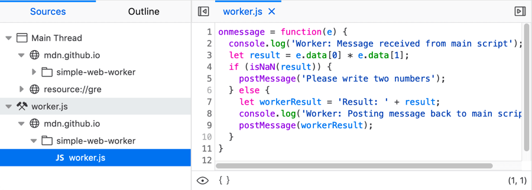
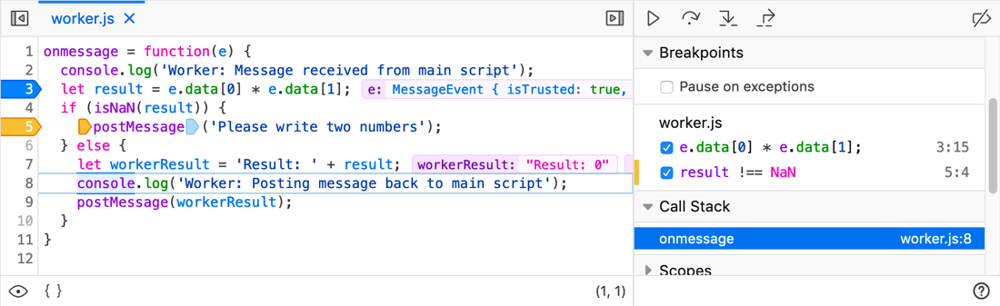

Web Workers are a simple means for web content to run scripts in background threads. The worker thread can perform tasks without interfering with the user interface. In addition, they can perform I/O using XMLHttpRequest (although the responseXML and channel attributes are always null) or fetch (with no such restrictions). Once created, a worker can send messages to the JavaScript code that created it by posting messages to an event handler specified by that code (and vice versa). This article provides a detailed introduction to using web workers.
A worker is an object created using a constructor (e.g. {{domxref("Worker.Worker", "Worker()")}}) that runs a named JavaScript file — this file contains the code that will run in the worker thread; workers run in another global context that is different from the current {{domxref("window")}}. Thus, using the {{domxref("window")}} shortcut to get the current global scope (instead of {{domxref("window.self","self")}}) within a {{domxref("Worker")}} will return an error.
The worker context is represented by a {{domxref("DedicatedWorkerGlobalScope")}} object in the case of dedicated workers (standard workers that are utilized by a single script; shared workers use {{domxref("SharedWorkerGlobalScope")}}). A dedicated worker is only accessible from the script that first spawned it, whereas shared workers can be accessed from multiple scripts.
Note: See The Web Workers API landing page for reference documentation on workers and additional guides.
You can run whatever code you like inside the worker thread, with some exceptions. For example, you can't directly manipulate the DOM from inside a worker, or use some default methods and properties of the {{domxref("window")}} object. But you can use a large number of items available under window, including WebSockets, and data storage mechanisms like IndexedDB. See Functions and classes available to workers for more details.
Data is sent between workers and the main thread via a system of messages — both sides send their messages using the postMessage() method, and respond to messages via the onmessage event handler (the message is contained within the {{event("Message")}} event's data attribute.) The data is copied rather than shared.
Workers may, in turn, spawn new workers, as long as those workers are hosted within the same origin as the parent page. In addition, workers may use XMLHttpRequest for network I/O, with the exception that the responseXML and channel attributes on XMLHttpRequest always return null.
As mentioned above, a dedicated worker is only accessible by the script that called it. In this section we'll discuss the JavaScript found in our Basic dedicated worker example (run dedicated worker): This allows you to enter two numbers to be multiplied together. The numbers are sent to a dedicated worker, multiplied together, and the result is returned to the page and displayed.
This example is rather trivial, but we decided to keep it simple while introducing you to basic worker concepts. More advanced details are covered later on in the article.
For slightly more controlled error handling and backwards compatibility, it is a good idea to wrap your worker accessing code in the following (main.js):
if (window.Worker) {
...
}
Creating a new worker is simple. All you need to do is call the {{domxref("Worker.Worker", "Worker()")}} constructor, specifying the URI of a script to execute in the worker thread (main.js):
var myWorker = new Worker('worker.js');
The magic of workers happens via the {{domxref("Worker.postMessage", "postMessage()")}} method and the {{domxref("Worker.onmessage", "onmessage")}} event handler. When you want to send a message to the worker, you post messages to it like this (main.js):
first.onchange = function() {
myWorker.postMessage([first.value, second.value]);
console.log('Message posted to worker');
}
second.onchange = function() {
myWorker.postMessage([first.value, second.value]);
console.log('Message posted to worker');
}
So here we have two {{htmlelement("input")}} elements represented by the variables first and second; when the value of either is changed, myWorker.postMessage([first.value,second.value]) is used to send the value inside both to the worker, as an array. You can send pretty much anything you like in the message.
In the worker, we can respond when the message is received by writing an event handler block like this (worker.js):
onmessage = function(e) {
console.log('Message received from main script');
var workerResult = 'Result: ' + (e.data[0] * e.data[1]);
console.log('Posting message back to main script');
postMessage(workerResult);
}
The onmessage handler allows us to run some code whenever a message is received, with the message itself being available in the message event's data attribute. Here we multiply together the two numbers then use postMessage() again, to post the result back to the main thread.
Back in the main thread, we use onmessage again, to respond to the message sent back from the worker:
myWorker.onmessage = function(e) {
result.textContent = e.data;
console.log('Message received from worker');
}
Here we grab the message event data and set it as the textContent of the result paragraph, so the user can see the result of the calculation.
onmessage and postMessage() need to be hung off the Worker object when used in the main script thread, but not when used in the worker. This is because, inside the worker, the worker is effectively the global scope.If you need to immediately terminate a running worker from the main thread, you can do so by calling the worker's {{domxref("Worker", "terminate")}} method:
myWorker.terminate();
The worker thread is killed immediately.
When a runtime error occurs in the worker, its onerror event handler is called. It receives an event named error which implements the ErrorEvent interface.
The event doesn't bubble and is cancelable; to prevent the default action from taking place, the worker can call the error event's preventDefault() method.
The error event has the following three fields that are of interest:
messagefilenamelinenoWorkers may spawn more workers if they wish. So-called sub-workers must be hosted within the same origin as the parent page. Also, the URIs for subworkers are resolved relative to the parent worker's location rather than that of the owning page. This makes it easier for workers to keep track of where their dependencies are.
Worker threads have access to a global function, importScripts(), which lets them import scripts. It accepts zero or more URIs as parameters to resources to import; all of the following examples are valid:
importScripts(); /* imports nothing */
importScripts('foo.js'); /* imports just "foo.js" */
importScripts('foo.js', 'bar.js'); /* imports two scripts */
importScripts('//example.com/hello.js'); /* You can import scripts from other origins */
The browser loads each listed script and executes it. Any global objects from each script may then be used by the worker. If the script can't be loaded, NETWORK_ERROR is thrown, and subsequent code will not be executed. Previously executed code (including code deferred using {{domxref("WindowOrWorkerGlobalScope.setTimeout")}}) will still be functional though. Function declarations after the importScripts() method are also kept, since these are always evaluated before the rest of the code.
importScripts() . This is done synchronously; importScripts() does not return until all the scripts have been loaded and executed.A shared worker is accessible by multiple scripts — even if they are being accessed by different windows, iframes or even workers. In this section we'll discuss the JavaScript found in our Basic shared worker example (run shared worker): This is very similar to the basic dedicated worker example, except that it has two functions available handled by different script files: multiplying two numbers, or squaring a number. Both scripts use the same worker to do the actual calculation required.
Here we'll concentrate on the differences between dedicated and shared workers. Note that in this example we have two HTML pages, each with JavaScript applied that uses the same single worker file.
Note: If SharedWorker can be accessed from several browsing contexts, all those browsing contexts must share the exact same origin (same protocol, host, and port).
Note: In Firefox, shared workers cannot be shared between documents loaded in private and non-private windows ({{bug(1177621)}}).
Spawning a new shared worker is pretty much the same as with a dedicated worker, but with a different constructor name (see index.html and index2.html) — each one has to spin up the worker using code like the following:
var myWorker = new SharedWorker('worker.js');
One big difference is that with a shared worker you have to communicate via a port object — an explicit port is opened that the scripts can use to communicate with the worker (this is done implicitly in the case of dedicated workers).
The port connection needs to be started either implicitly by use of the onmessage event handler or explicitly with the start() method before any messages can be posted. Calling start() is only needed if the message event is wired up via the addEventListener() method.
Note: When using the start() method to open the port connection, it needs to be called from both the parent thread and the worker thread if two-way communication is needed.
Now messages can be sent to the worker as before, but the postMessage() method has to be invoked through the port object (again, you'll see similar constructs in both multiply.js and square.js):
squareNumber.onchange = function() {
myWorker.port.postMessage([squareNumber.value,squareNumber.value]);
console.log('Message posted to worker');
}
Now, on to the worker. There is a bit more complexity here as well (worker.js):
onconnect = function(e) {
var port = e.ports[0];
port.onmessage = function(e) {
var workerResult = 'Result: ' + (e.data[0] * e.data[1]);
port.postMessage(workerResult);
}
}
First, we use an onconnect handler to fire code when a connection to the port happens (i.e. when the onmessage event handler in the parent thread is setup, or when the start() method is explicitly called in the parent thread).
We use the ports attribute of this event object to grab the port and store it in a variable.
Next, we add a message handler on the port to do the calculation and return the result to the main thread. Setting up this message handler in the worker thread also implicitly opens the port connection back to the parent thread, so the call to port.start() is not actually needed, as noted above.
Finally, back in the main script, we deal with the message (again, you'll see similar constructs in both multiply.js and square.js):
myWorker.port.onmessage = function(e) {
result2.textContent = e.data;
console.log('Message received from worker');
}
When a message comes back through the port from the worker, we insert the calculation result inside the appropriate result paragraph.
The {{domxref("Worker")}} interface spawns real OS-level threads, and mindful programmers may be concerned that concurrency can cause “interesting” effects in your code if you aren't careful.
However, since web workers have carefully controlled communication points with other threads, it's actually very hard to cause concurrency problems. There's no access to non-threadsafe components or the DOM. And you have to pass specific data in and out of a thread through serialized objects. So you have to work really hard to cause problems in your code.
Workers are considered to have their own execution context, distinct from the document that created them. For this reason they are, in general, not governed by the content security policy of the document (or parent worker) that created them. So for example, suppose a document is served with the following header:
Content-Security-Policy: script-src 'self'
Among other things, this will prevent any scripts it includes from using eval(). However, if the script constructs a worker, code running in the worker's context will be allowed to use eval().
To specify a content security policy for the worker, set a Content-Security-Policy response header for the request which delivered the worker script itself.
The exception to this is if the worker script's origin is a globally unique identifier (for example, if its URL has a scheme of data or blob). In this case, the worker does inherit the CSP of the document or worker that created it.
Data passed between the main page and workers is copied, not shared. Objects are serialized as they're handed to the worker, and subsequently, de-serialized on the other end. The page and worker do not share the same instance, so the end result is that a duplicate is created on each end. Most browsers implement this feature as structured cloning.
To illustrate this, let's create for didactical purpose a function named emulateMessage(), which will simulate the behavior of a value that is cloned and not shared during the passage from a worker to the main page or vice versa:
function emulateMessage(vVal) {
return eval('(' + JSON.stringify(vVal) + ')');
}
// Tests
// test #1
var example1 = new Number(3);
console.log(typeof example1); // object
console.log(typeof emulateMessage(example1)); // number
// test #2
var example2 = true;
console.log(typeof example2); // boolean
console.log(typeof emulateMessage(example2)); // boolean
// test #3
var example3 = new String('Hello World');
console.log(typeof example3); // object
console.log(typeof emulateMessage(example3)); // string
// test #4
var example4 = {
'name': 'John Smith',
"age": 43
};
console.log(typeof example4); // object
console.log(typeof emulateMessage(example4)); // object
// test #5
function Animal(sType, nAge) {
this.type = sType;
this.age = nAge;
}
var example5 = new Animal('Cat', 3);
alert(example5.constructor); // Animal
alert(emulateMessage(example5).constructor); // Object
A value that is cloned and not shared is called message. As you will probably know by now, messages can be sent to and from the main thread by using postMessage(), and the message event's {{domxref("MessageEvent.data", "data")}} attribute contains data passed back from the worker.
example.html: (the main page):
var myWorker = new Worker('my_task.js');
myWorker.onmessage = function(oEvent) {
console.log('Worker said : ' + oEvent.data);
};
myWorker.postMessage('ali');
my_task.js (the worker):
postMessage("I\'m working before postMessage(\'ali\').");
onmessage = function(oEvent) {
postMessage('Hi ' + oEvent.data);
};
The structured cloning algorithm can accept JSON and a few things that JSON can't — like circular references.
If you have to pass some complex data and have to call many different functions both on the main page and in the Worker, you can create a system which groups everything together.
First, we create a QueryableWorker class that takes the URL of the worker, a default listener, and an error handler, and this class is going to keep track of a list of listeners and help us communicate with the worker:
function QueryableWorker(url, defaultListener, onError) {
var instance = this,
worker = new Worker(url),
listeners = {};
this.defaultListener = defaultListener || function() {};
if (onError) {worker.onerror = onError;}
this.postMessage = function(message) {
worker.postMessage(message);
}
this.terminate = function() {
worker.terminate();
}
}
Then we add the methods of adding/removing listeners:
this.addListeners = function(name, listener) {
listeners[name] = listener;
}
this.removeListeners = function(name) {
delete listeners[name];
}
Here we let the worker handle two simple operations for illustration: getting the difference of two numbers and making an alert after three seconds. In order to achieve that we first implement a sendQuery method which queries if the worker actually has the corresponding methods to do what we want.
/*
This functions takes at least one argument, the method name we want to query.
Then we can pass in the arguments that the method needs.
*/
this.sendQuery = function() {
if (arguments.length < 1) {
throw new TypeError('QueryableWorker.sendQuery takes at least one argument');
return;
}
worker.postMessage({
'queryMethod': arguments[0],
'queryArguments': Array.prototype.slice.call(arguments, 1)
});
}
We finish QueryableWorker with the onmessage method. If the worker has the corresponding methods we queried, it should return the name of the corresponding listener and the arguments it needs, we just need to find it in listeners.:
worker.onmessage = function(event) {
if (event.data instanceof Object &&
event.data.hasOwnProperty('queryMethodListener') &&
event.data.hasOwnProperty('queryMethodArguments')) {
listeners[event.data.queryMethodListener].apply(instance, event.data.queryMethodArguments);
} else {
this.defaultListener.call(instance, event.data);
}
}
Now onto the worker. First we need to have the methods to handle the two simple operations:
var queryableFunctions = {
getDifference: function(a, b) {
reply('printStuff', a - b);
},
waitSomeTime: function() {
setTimeout(function() {
reply('doAlert', 3, 'seconds');
}, 3000);
}
}
function reply() {
if (arguments.length < 1) {
throw new TypeError('reply - takes at least one argument');
return;
}
postMessage({
queryMethodListener: arguments[0],
queryMethodArguments: Array.prototype.slice.call(arguments, 1)
});
}
/* This method is called when main page calls QueryWorker's postMessage method directly*/
function defaultReply(message) {
// do something
}
And the onmessage method is now trivial:
onmessage = function(event) {
if (event.data instanceof Object &&
event.data.hasOwnProperty('queryMethod') &&
event.data.hasOwnProperty('queryMethodArguments')) {
queryableFunctions[event.data.queryMethod]
.apply(self, event.data.queryMethodArguments);
} else {
defaultReply(event.data);
}
}
Here are the full implementation:
example.html (the main page):
<!doctype html>
<html>
<head>
<meta charset="UTF-8" />
<title>MDN Example - Queryable worker</title>
<script type="text/javascript">
/*
QueryableWorker instances methods:
* sendQuery(queryable function name, argument to pass 1, argument to pass 2, etc. etc): calls a Worker's queryable function
* postMessage(string or JSON Data): see Worker.prototype.postMessage()
* terminate(): terminates the Worker
* addListener(name, function): adds a listener
* removeListener(name): removes a listener
QueryableWorker instances properties:
* defaultListener: the default listener executed only when the Worker calls the postMessage() function directly
*/
function QueryableWorker(url, defaultListener, onError) {
var instance = this,
worker = new Worker(url),
listeners = {};
this.defaultListener = defaultListener || function() {};
if (onError) {worker.onerror = onError;}
this.postMessage = function(message) {
worker.postMessage(message);
}
this.terminate = function() {
worker.terminate();
}
this.addListener = function(name, listener) {
listeners[name] = listener;
}
this.removeListener = function(name) {
delete listeners[name];
}
/*
This functions takes at least one argument, the method name we want to query.
Then we can pass in the arguments that the method needs.
*/
this.sendQuery = function() {
if (arguments.length < 1) {
throw new TypeError('QueryableWorker.sendQuery takes at least one argument');
return;
}
worker.postMessage({
'queryMethod': arguments[0],
'queryMethodArguments': Array.prototype.slice.call(arguments, 1)
});
}
worker.onmessage = function(event) {
if (event.data instanceof Object &&
event.data.hasOwnProperty('queryMethodListener') &&
event.data.hasOwnProperty('queryMethodArguments')) {
listeners[event.data.queryMethodListener].apply(instance, event.data.queryMethodArguments);
} else {
this.defaultListener.call(instance, event.data);
}
}
}
// your custom "queryable" worker
var myTask = new QueryableWorker('my_task.js');
// your custom "listeners"
myTask.addListener('printStuff', function (result) {
document.getElementById('firstLink').parentNode.appendChild(document.createTextNode('The difference is ' + result + '!'));
});
myTask.addListener('doAlert', function (time, unit) {
alert('Worker waited for ' + time + ' ' + unit + ' :-)');
});
</script>
</head>
<body>
<ul>
<li><a id="firstLink" href="javascript:myTask.sendQuery('getDifference', 5, 3);">What is the difference between 5 and 3?</a></li>
<li><a href="javascript:myTask.sendQuery('waitSomeTime');">Wait 3 seconds</a></li>
<li><a href="javascript:myTask.terminate();">terminate() the Worker</a></li>
</ul>
</body>
</html>
my_task.js (the worker):
var queryableFunctions = {
// example #1: get the difference between two numbers:
getDifference: function(nMinuend, nSubtrahend) {
reply('printStuff', nMinuend - nSubtrahend);
},
// example #2: wait three seconds
waitSomeTime: function() {
setTimeout(function() { reply('doAlert', 3, 'seconds'); }, 3000);
}
};
// system functions
function defaultReply(message) {
// your default PUBLIC function executed only when main page calls the queryableWorker.postMessage() method directly
// do something
}
function reply() {
if (arguments.length < 1) { throw new TypeError('reply - not enough arguments'); return; }
postMessage({ 'queryMethodListener': arguments[0], 'queryMethodArguments': Array.prototype.slice.call(arguments, 1) });
}
onmessage = function(oEvent) {
if (oEvent.data instanceof Object && oEvent.data.hasOwnProperty('queryMethod') && oEvent.data.hasOwnProperty('queryMethodArguments')) {
queryableFunctions[oEvent.data.queryMethod].apply(self, oEvent.data.queryMethodArguments);
} else {
defaultReply(oEvent.data);
}
};
It is possible to switch the content of each mainpage -> worker and worker -> mainpage message. And the property names "queryMethod", "queryMethodListeners", "queryMethodArguments" can be anything as long as they are consistent in QueryableWorker and the worker.
Google Chrome 17+ and Firefox 18+ contain an additional way to pass certain types of objects (transferable objects, that is objects implementing the {{domxref("Transferable")}} interface) to or from a worker with high performance. Transferable objects are transferred from one context to another with a zero-copy operation, which results in a vast performance improvement when sending large data sets. Think of it as pass-by-reference if you're from the C/C++ world. However, unlike pass-by-reference, the 'version' from the calling context is no longer available once transferred. Its ownership is transferred to the new context. For example, when transferring an {{jsxref("ArrayBuffer")}} from your main app to a worker script, the original {{jsxref("ArrayBuffer")}} is cleared and no longer usable. Its content is (quite literally) transferred to the worker context.
// Create a 32MB "file" and fill it.
var uInt8Array = new Uint8Array(1024 * 1024 * 32); // 32MB
for (var i = 0; i < uInt8Array.length; ++i) {
uInt8Array[i] = i;
}
worker.postMessage(uInt8Array.buffer, [uInt8Array.buffer]);
Note: For more information on transferable objects, performance, and feature-detection for this method, read Transferable Objects: Lightning Fast! on HTML5 Rocks.
There is not an "official" way to embed the code of a worker within a web page, like {{HTMLElement("script")}} elements do for normal scripts. But a {{HTMLElement("script")}} element that does not have a src attribute and has a type attribute that does not identify an executable MIME type can be considered a data block element that JavaScript could use. "Data blocks" is a more general feature of HTML5 that can carry almost any textual data. So, a worker could be embedded in this way:
<!DOCTYPE html>
<html>
<head>
<meta charset="UTF-8" />
<title>MDN Example - Embedded worker</title>
<script type="text/js-worker">
// This script WON'T be parsed by JS engines because its MIME type is text/js-worker.
var myVar = 'Hello World!';
// Rest of your worker code goes here.
</script>
<script type="text/javascript">
// This script WILL be parsed by JS engines because its MIME type is text/javascript.
function pageLog(sMsg) {
// Use a fragment: browser will only render/reflow once.
var oFragm = document.createDocumentFragment();
oFragm.appendChild(document.createTextNode(sMsg));
oFragm.appendChild(document.createElement('br'));
document.querySelector('#logDisplay').appendChild(oFragm);
}
</script>
<script type="text/js-worker">
// This script WON'T be parsed by JS engines because its MIME type is text/js-worker.
onmessage = function(oEvent) {
postMessage(myVar);
};
// Rest of your worker code goes here.
</script>
<script type="text/javascript">
// This script WILL be parsed by JS engines because its MIME type is text/javascript.
// In the past...:
// blob builder existed
// ...but now we use Blob...:
var blob = new Blob(Array.prototype.map.call(document.querySelectorAll('script[type=\'text\/js-worker\']'), function (oScript) { return oScript.textContent; }),{type: 'text/javascript'});
// Creating a new document.worker property containing all our "text/js-worker" scripts.
document.worker = new Worker(window.URL.createObjectURL(blob));
document.worker.onmessage = function(oEvent) {
pageLog('Received: ' + oEvent.data);
};
// Start the worker.
window.onload = function() { document.worker.postMessage(''); };
</script>
</head>
<body><div id="logDisplay"></div></body>
</html>
The embedded worker is now nested into a new custom document.worker property.
It is also worth noting that you can also convert a function into a Blob, then generate an object URL from that blob. For example:
function fn2workerURL(fn) {
var blob = new Blob(['('+fn.toString()+')()'], {type: 'text/javascript'})
return URL.createObjectURL(blob)
}
This section provides further examples of how to use web workers.
Workers are mainly useful for allowing your code to perform processor-intensive calculations without blocking the user interface thread. In this example, a worker is used to calculate Fibonacci numbers.
The following JavaScript code is stored in the "fibonacci.js" file referenced by the HTML in the next section.
var results = [];
function resultReceiver(event) {
results.push(parseInt(event.data));
if (results.length == 2) {
postMessage(results[0] + results[1]);
}
}
function errorReceiver(event) {
throw event.data;
}
onmessage = function(event) {
var n = parseInt(event.data);
if (n == 0 || n == 1) {
postMessage(n);
return;
}
for (var i = 1; i <= 2; i++) {
var worker = new Worker('fibonacci.js');
worker.onmessage = resultReceiver;
worker.onerror = errorReceiver;
worker.postMessage(n - i);
}
};
The worker sets the property onmessage to a function which will receive messages sent when the worker object's postMessage() is called (note that this differs from defining a global variable of that name, or defining a function with that name. var onmessage and function onmessage will define global properties with those names, but they will not register the function to receive messages sent by the web page that created the worker). This starts the recursion, spawning new copies of itself to handle each iteration of the calculation.
<!DOCTYPE html>
<html>
<head>
<meta charset="UTF-8" />
<title>Test threads fibonacci</title>
</head>
<body>
<div id="result"></div>
<script language="javascript">
var worker = new Worker('fibonacci.js');
worker.onmessage = function(event) {
document.getElementById('result').textContent = event.data;
console.log('Got: ' + event.data + '\n');
};
worker.onerror = function(error) {
console.log('Worker error: ' + error.message + '\n');
throw error;
};
worker.postMessage('5');
</script>
</body>
</html>
The web page creates a div element with the ID result , which gets used to display the result, then spawns the worker. After spawning the worker, the onmessage handler is configured to display the results by setting the contents of the div element, and the onerror handler is set to log the error message to the devtools console.
Finally, a message is sent to the worker to start it.
As multi-core computers become increasingly common, it's often useful to divide computationally complex tasks among multiple workers, which may then perform those tasks on multiple-processor cores.
In addition to dedicated and shared web workers, there are other types of worker available:
Most browsers support debugging of worker threads in their JavaScript debuggers in exactly the same way as debugging the main thread! For example, both Firefox and Chrome list JavaScript source files for both the main thread and active worker threads, and all of these files can be opened to set breakpoints and logpoints.
The screenshot below shows this on Firefox. The sources list shows worker.js running in a separate worker thread. When selected this file is opened in the source pane, just like code running in the main thread.

Note: Worker scripts are loaded when needed, and hence may not be present in the sources list when a page is first loaded.
In the source pane you can set a breakpoint (or logpoint) in a worker thread in the normal way. When execution is paused, the context of the debugger is updated to show correct breakpoints, inline variable preview, call stack, etc., just as you'd expect.

Note: For more information see Firefox JavaScript Debugger.
You can use most standard JavaScript features inside a web worker, including:
The main thing you can't do in a Worker is directly affect the parent page. This includes manipulating the DOM and using that page's objects. You have to do it indirectly, by sending a message back to the main script via {{domxref("DedicatedWorkerGlobalScope.postMessage")}}, then actioning the changes from there.
You can test whether a method is available to workers using the site: https://worker-playground.glitch.me/ . For example, if you enter EventSource into the site on Firefox 84 you'll see that this is not supported in service workers, but is in dedicated and shared workers.
Note: For a complete list of functions available to workers, see Functions and interfaces available to workers.
| Specification | Status | Comment |
|---|---|---|
| {{SpecName('HTML WHATWG', '#workers', 'Web workers')}} | {{Spec2('HTML WHATWG')}} |
Worker interfaceSharedWorker interface